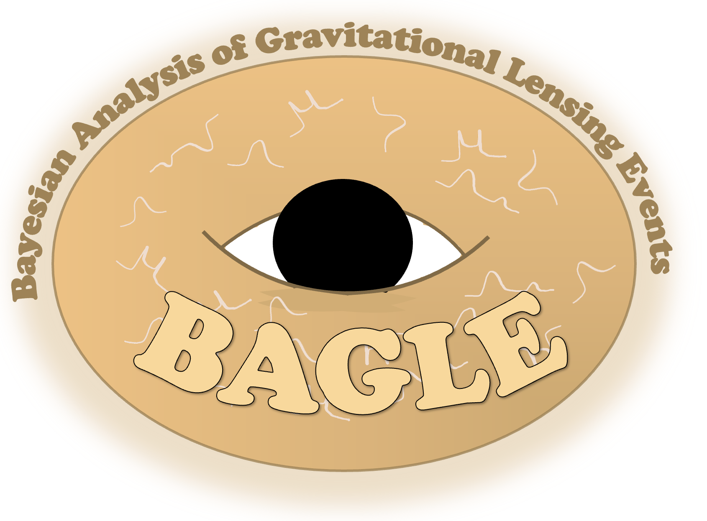
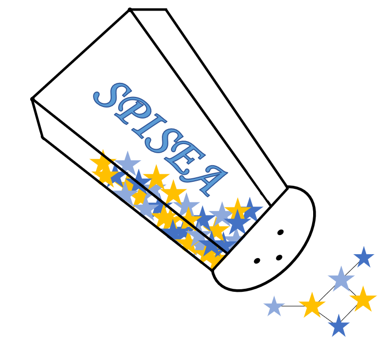
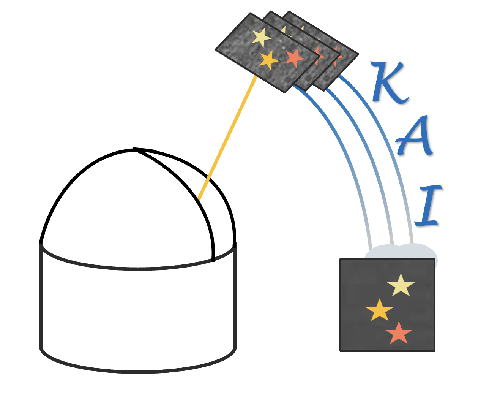

Here are the open-source software packages I develop and contribute to!

BAGLE (Bayesian Analysis of Gravitational Lensing Events) is a microlensing modeling and fitting pacakage. It can generate microlensing lightcurves and astrometry for single and binary lenses and sources. It also performs nested sampling fits on photometry or joint-photometric and astrometric data. It can be used to infer microlensing parameters and lens masses.
Papers
PopSyCLE is a microlensing population synthesis code. It uses Galaxia to generate stellar density and kinematics and SPISEA for compact objects and binary companions.
Papers

SPISEA is a simple stellar population synthesis code that can generate single-age, single-metallicity populations.
Papers
PUZLE is a Python package for discovering microlensing events in ZTF data. It performs successive filtering and fitting to identify microlensing events.
Papers

The Keck AO Imaging (KAI) data reduction pipeline processes raw Keck images and produces catalogs of photometry and astrometry for each epoch. Note, the pipeline is no longer dependent on IRAF!
FlyStar cross-matches reference stars and transforms detector coordinates into a common astrometric frame, tying Keck AO epochs to survey or Gaia reference catalogs.